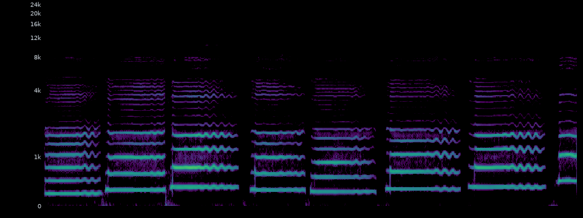

Vocal to accompaniment · controlled replay
LaDA-Band · GRPO
固定同一条 Emma 独唱、相同文本提示与评估随机种子，比较冻结基线和在线后训练检查点。先听配对，再看各项分数。
Input · fixed vocal
Emma · 原创旋律

ACE Studio Vocal Synth；同一歌手、无伴奏、无效果。
Ground truth accompaniment
无唯一参考
开放式伴奏生成没有单一标准音频。所有阶段使用完全相同的人声输入和提示；训练用前 6 秒，试听评估用前 12 秒。
配对试听 · 人声 + 伴奏
检查点
同一评估输入 · 客观指标
| Step | 组合 reward | RMS coverage | STFT coverage | 起音匹配代理 | Beat-v2 F1 | Beat V/A | 频带占用代理 | 频谱平坦度 | 整体 RMS | 立体声峰值 | 削波占比 |
|---|
训练使用 40 ms 帧 RMS coverage；STFT coverage 与 Madmom Beat-v2 是独立离线评估，未用于这次 GRPO 更新。Beat V/A 分别是检测到的人声/伴奏拍点数。起音匹配与频带占用仅是训练代理，不等同已验证的 Beat-v2 或 richness。整体 RMS、峰值和削波占比从原始伴奏两声道离线统计，不能代替主观听感。
训练采样轨迹
Reward 均值Coverage 均值
证据边界
单歌手、单旋律、小片段实验；这个页面是同输入 A/B 听感展示，不是跨歌曲显著性结论。LoRA 仅更新离散扩散模型的输出投影；主干、CLaMP3、MuCodec 冻结。组合代理 reward 不等同人工偏好。